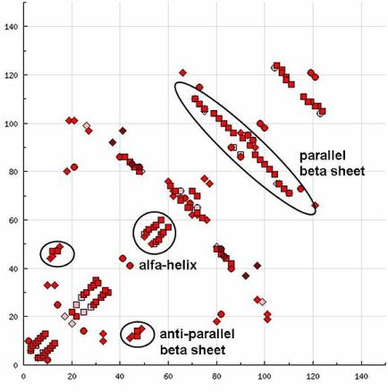
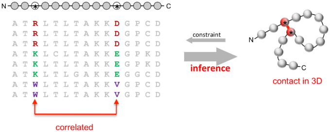
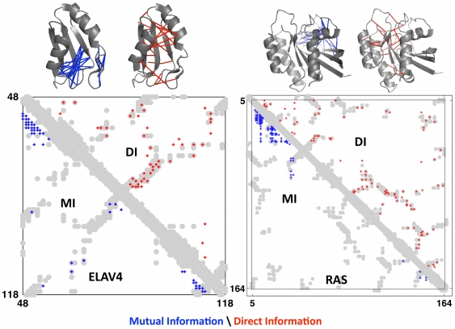
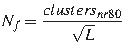
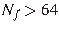

En la sección 5.2 mencionamos por primera vez en este documento las matrices de contactos, que resumen en forma matricial los contactos observados entre los residuos de una secuencia en su estructura terciaria. Es habitual que las matrices de contactos o contact maps se calculen excluyendo los contactos entre residuos inmediatamente vecinos. La siguiente figura muestra de qué manera se reflejan los elementos de estructura secundaria en una matriz de contactos, donde los ejes son los residuos ordenados por su posición en la secuencia.
|

|
Esta manera de condensar una estructura terciaria es literalmente el fundamento de la resolución de estructuras por NMR (ver sección 1.4), donde las observaciones experimentales de partida son esencialmente contactos atómicos entre residuos. Además, las matrices de contactos han sido durante mucho tiempo una fuente de inspiración de métodos de predicción estructural, con la idea subyacente de 'si somos capaces de predecir con información evolutiva qué residuos de una secuencia contactan, entonces podremos resolver su estructura' (de Juan et al., 2013; Gobel et al., 1994).
La información evolutiva en cuestión es normalmente un alineamiento múltiple de secuencias homólogas, que se espera capturen de forma implícita las limitaciones que impone la estructura terciaria de un dominio a las sustituciones de aminoácidos que contactan. La función matemática que se emplea habitualmente para estudiar esto es la información mutua (MI), que mide la dependencia entre dos variables, en este caso columnas de un alineamiento.
|

|
Por tanto, el problema de la predicción de contactos se puede plantear así:
El algoritmo EVfold, publicado originalmente en (Marks et al., 2011), emplea estos elementos para hacer predicciones de contactos de alta calidad, ya que por primera vez es capaz de distinguir entre posiciones de la secuencia que directamente contactan de las que correlacionan simplemente porque contactan con un mismo residuo. Usando su terminología, MI es un modelo 'local' de probabilidad de contactos, que ellos son capaces de corregir y convertir en un modelo 'global' usando conceptos de la mecánica estadística y la maximización de la entropía.

|
|

|
La siguiente figura muestra el diagrama de flujo completo del método EVfold, que ha sido posteriormente adaptado para proteínas transmembrana (Hopf et al., 2012) y también para complejos cuaternarios (Hopf et al., 2014):

|
La siguiente figura muestra los resultados de la validación de EVfold sobre un conjunto de 15 secuencias:
Esta familia de métodos se está desarrollando ahora y sigue habiendo avances importantes. El más reciente es que el uso de secuencias metagenómicas permite ampliar el universo de secuencias lo suficiente para mejorar las predicciones de contactos (usando GREMLIN) y obtener así estructuras, de momento bacterianas, de numerosos plegamientos desconocidos (Ovchinnikov et al., 2017). Además, Ovchinnikov et al. (2017) proponen una función para estimar la calidad de los modelos si hay suficientes secuencias para abordar este tipo de modelado:
|  | (5.3) |
En esta función el numerador representa el total de clusters de secuencias homólogas no redundantes al 80% encontradas con HHblits y el numerador es la longitud de la secuencia problema. Cuando  se obtienen modelos de buena calidad.
Para poner en práctica estos algoritmos sugiero hacer este ejercicio:
#!/usr/bin/perl -w
# prog3.4
# Bruno Contreras-Moreira
# prototype of Mutual Information (MI) among columns of FASTA multiple alignment,
# partial version of that formulated in doi:10.1371/journal.pone.0028766
use strict;
$|=1;
use constant NAME => 0;
use constant SEQ => 1;
my ($length,$last_seq,$seq,$posi,$posj,$tot,$aai,$aaj,$aapair,$i,$j) = (0,0);
my ($alphabet_size,$term,$MI,@MSA,@freq,@cofreq,@aas,%valid_aas) = (0);
# define accepted alignment chars (sorted, gaps + standard amino acids)
@aas = qw( - A C D E F G H I K L M N P Q R S T V W Y );
$alphabet_size = scalar(@aas);
foreach $aai (@aas){ $valid_aas{$aai} = 1 }
#################################################################################
my $inMSA = $ARGV[0] || die "# usage: $0 <alignment.faa>\n";
my $fasta_ref = read_FASTA_file_array($inMSA);
$last_seq = $#{$fasta_ref};
# fill @MSA matrix with sequence of each input sequence
foreach $seq ( 0 .. $last_seq )
{
if($length > 0 && length($fasta_ref->[$seq][SEQ]) != $length)
{
die "# $0 : input aligned sequences differ in length\n";
}
else{ $length = length($fasta_ref->[$seq][SEQ]) }
push(@MSA,[ split(//,$fasta_ref->[$seq][SEQ]) ]);
}
printf("# alphabet(%d): %s\n",$alphabet_size,join(',',@aas));
printf("# total sequences: %d (in %s)\n",$last_seq+1,$inMSA);
printf("# alignment length: %d\n",$length);
# calculate amino acid frequency per position/column
print "# estimating amino acid frequencies per position...\n";
foreach $posi ( 0 .. $length-1)
{
my %counts;
$tot = 0;
foreach $seq ( 0 .. $last_seq )
{
$aai = $MSA[$seq][$posi];
next if(!$valid_aas{$aai}); # skip undefined residues
$counts{$aai}++;
$tot++;
}
foreach $aai (@aas){ $freq[$posi]{$aai} = ($counts{$aai}) ? $counts{$aai}/$tot : 0 }
}
# calculate occurrence of pairs of residues on positions i,j
print "# estimating co-occurring frequencies over all pairs of positions...\n";
foreach $posi ( 0 .. $length-1)
{
foreach $posj ( $posi+1 .. $length-1)
{
my %counts;
$tot = 0;
foreach $seq ( 0 .. $last_seq )
{
$aai = $MSA[$seq][$posi];
next if(!$valid_aas{$aai});
$aaj = $MSA[$seq][$posj];
next if(!$valid_aas{$aaj});
if($aai lt $aaj){ $aapair = $aai.$aaj }
else{ $aapair = $aaj.$aai }
$counts{$aapair}++;
$tot++;
}
foreach $i (0 .. $#aas)
{
$aai = $aas[$i];
foreach $j ($i .. $#aas)
{
$aaj = $aas[$j];
$aapair = $aai.$aaj;
$cofreq[$posi][$posj]{$aapair} = ($counts{$aapair}) ? $counts{$aapair}/$tot : 0;
}
}
}
}
# calculate mutual information of columns i,j
print "# calculating MI over all pairs of positions...\n";
print "# i\tj\tMI\n";
foreach $posi ( 0 .. $length-1)
{
foreach $posj ( $posi+1 .. $length-1)
{
$MI = 0;
foreach $i (0 .. $#aas)
{
$aai = $aas[$i];
next if(!$freq[$posi]{$aai});
foreach $j ($i .. $#aas)
{
$aaj = $aas[$j];
next if(!$freq[$posj]{$aaj});
$aapair = $aai.$aaj;
next if(!$cofreq[$posi][$posj]{$aapair});
$term = $cofreq[$posi][$posj]{$aapair} *
log($cofreq[$posi][$posj]{$aapair} /
($freq[$posi]{$aai}*$freq[$posj]{$aaj}));
$MI += $term;
}
}
printf("%d\t%d\t%1.5f\n",$posi+1,$posj+1,$MI) if($MI > 0);
}
}
sub read_FASTA_file_array
{
# in FASTA format
# returns a reference to a 2D array for 2 secondary indexes: NAME,SEQ
# first valid index (first sequence) is '0'
# '.' gaps are convert t '-', sequences to upper-case
my ( $infile ) = @_;
my ($n_of_sequences,@FASTA,$name,$seq,$magic) = (-1);
# check input file format and open it accordingly
open(INFILE,$infile) || die "# read_FASTA_sequence_array: cannot read $infile, exit\n";
sysread(INFILE,$magic,2);
close(INFILE);
if($infile =~ /\.gz$/ || $magic eq "\x1f\x8b") # GZIP compressed input
{
if(!open(FASTA,"gzip -dc $infile |"))
{
die "# read_FASTA_sequence_array: cannot read GZIP compressed $infile $!\n"
."# please check gzip in installed\n";
}
}
else{ open(FASTA,"<$infile") }
while(<FASTA>)
{
next if(/^$/ || /^#/);
if(/^\>(.*?)[\n\r]/)
{
$n_of_sequences++; # first sequence ID is 0
$name = $1;
$FASTA[$n_of_sequences][NAME] = $name;
}
elsif($n_of_sequences>-1)
{
$_ =~ s/\n//g;
$_ =~ s/\./-/g;
$FASTA[$n_of_sequences][SEQ] .= uc($_);
}
}
close(FASTA);
return \@FASTA;
}